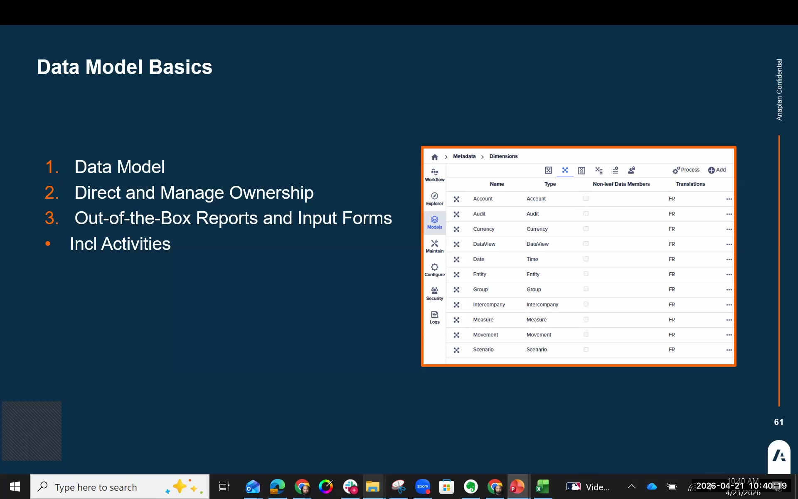
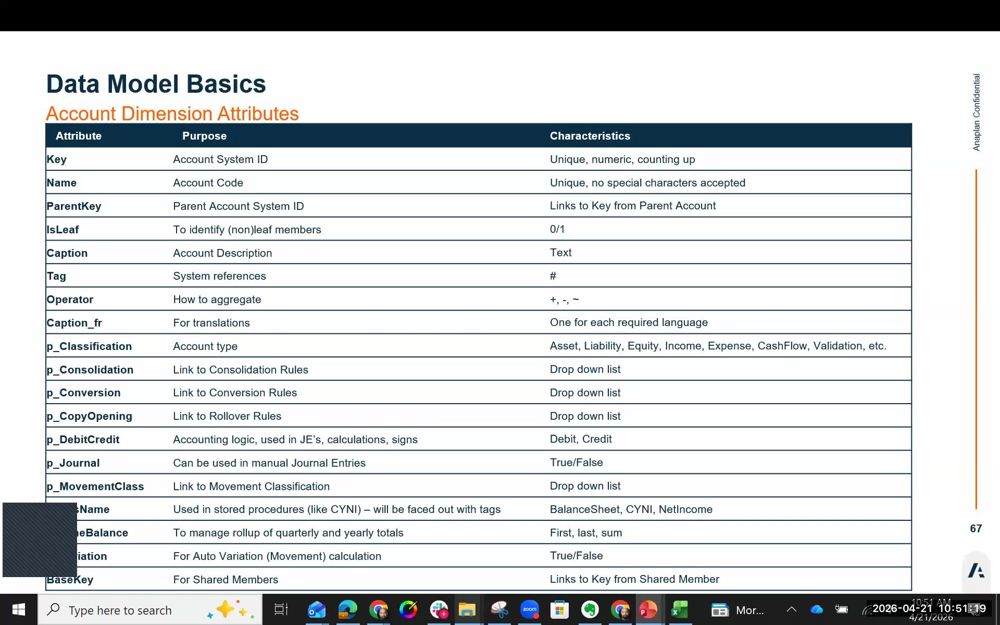
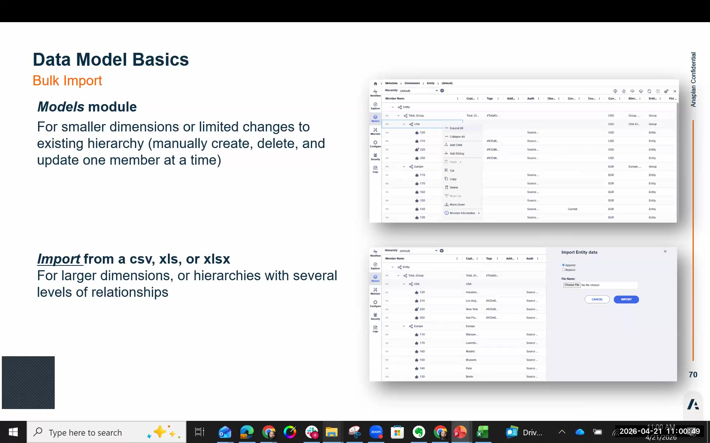
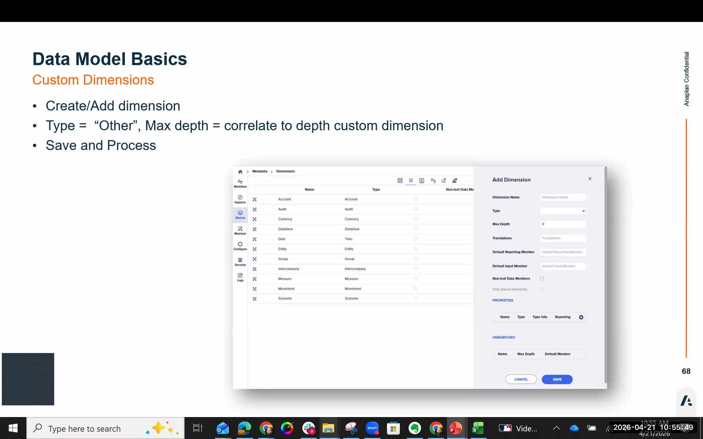

Data Model
FCR's dimensions, tenant types, and account configuration
Tenant Types
FCR tenants are provisioned in one of three configurations. The choice must be locked in before provisioning — it cannot be changed afterwards.
Choosing the wrong tenant type cannot be corrected by changing a setting. The tenant must be fully re-provisioned from scratch — which means re-doing all configuration. Have this conversation with the customer before any provisioning request is submitted.
| Tenant Type | Dimensions | Geography / Use Case | Group Dimension? |
|---|---|---|---|
| 10-Dimension (Base) | 10 | AMER, UK, Nordics | No — uses separate elimination entities per parent |
| 11-Dimension with Group | 11 | Europe (this workshop) | Yes — eliminations posted to trading partner entities, sliced by common parent group |
| 14-Dimension IFRS Accelerator | 14 | Central/Eastern Europe | Yes — extended IFRS-aligned model |

The 11 Pre-Defined Dimensions
This workshop uses the 11-dimension model. All dimensions below come out-of-the-box; custom dimensions can be added on top.
| Dimension | Purpose |
|---|---|
| Entity | Legal entities and group hierarchy. The primary structural dimension — drives the Intercompany and Group dimensions. |
| Company | Flat view of entities for reporting; auto-synchronized from the Entity dimension. |
| Intercompany | Identifies the counterparty in intercompany transactions. Auto-generated from the Entity dimension. |
| Group | (11-dim only) Defines which group-level subconsolidation an elimination belongs to. Auto-generated from Entity Type = Group members. |
| Account | Chart of accounts. The most configuration-intensive dimension — holds tags, classification, conversion rules, and consolidation rule assignments. |
| Scenario | Actuals, Budget, Forecast, and constant-currency variants. Controls which version of data is being viewed or calculated. |
| Period / Date | Calendar periods (e.g., 2024 P12). Data can only be loaded to periods that are open in the Open Periods table. |
| Audit | Segregates data by source type. Source GL holds loaded trial balance data; Manual Journal children hold journal entries; calculated results get their own audit members. |
| DataView | Separates data by processing stage: Value (raw input), Conversion (currency translated), Consolidation (consolidated output). Not additive — each member is a distinct view. |
| Movement | Tracks balance sheet continuity (opening, closing, variation). Enables CTA calculation and cash flow automation. |
| Custom (Other) | Any additional dimensions your model needs (e.g., Cost Center, Product). Only the "Other" type can be added multiple times. See Custom Dimensions section below. |
Key Dimension Deep Dives
Audit Dimension
The Audit dimension segregates data by its origin. This is how FCR keeps raw input data separate from calculated results and manual adjustments.
- Source GL — The child audit member where trial balance data is loaded. You can create multiple Source GL members for multi-source environments (e.g., one per ERP system).
- Manual Journal — Parent member. Its children (Reclass, Interco Adjustment, Other Manual, Manual Interco Adjustment) are where journal entries are posted.
- Calculated audit members — Consolidation calculation results (eliminations, NCI, equity method entries) are stored in their own audit members, keeping them separate from input data.
Because Source GL is a separate audit member, you can always see raw loaded data alongside adjustments and consolidation calculations — side by side, in the same report — without them interfering with each other.
DataView Dimension
DataView has three members that represent distinct stages of data processing:
- Value — Raw data as loaded from source GL systems.
- Conversion — Data after currency translation has been applied.
- Consolidation — Final consolidated output after all consolidation rules have run.
Unlike most dimensions, DataView members do not roll up. Each member represents a completely separate stage of data. You select one member at a time to see that view. Adding Value + Conversion + Consolidation together produces meaningless numbers.
Movement Dimension
The Movement dimension is what makes FCR's balance sheet continuity and cash flow automation possible. Every account that has balance sheet behavior (opening balance → changes → closing balance) is tracked through movement members:
- Opening Balance — Carried forward from the prior period's closing balance via the Copy Opening process.
- Closing Balance — The end-of-period balance; what typically appears in a balance sheet report.
- Variation — Period-over-period movement. Used to calculate CTA (Currency Translation Adjustment) for each account.
- Cash flow members — Specific movement members drive the automated cash flow statement generation.
Account Dimension — Attributes Reference
The Account dimension carries more configuration than any other dimension. Every account attribute you set here drives behaviour in currency conversion, consolidation rules, and reporting.
| Attribute | What It Controls |
|---|---|
| Name | The account ID / code — not a display label. Must be unique. No spaces. This is what rules, mappings, and integrations reference. |
| Caption | The display label shown in reports and forms. Can contain spaces and full descriptions. |
| Tags | Prefixed with #. Referenced by consolidation rules and matching rules. The most powerful mechanism for making rules reusable. See the Tags section below. |
| Classification | Asset, Liability, Equity, Revenue, or Expense. Drives sign behaviour and report positioning. |
| Operator | + or –. Controls whether the account's balance adds to or subtracts from its parent in the hierarchy. |
| P_conversion | Which currency conversion rule applies to this account (e.g., End Rate for balance sheet, Average for income statement, Historical for equity). If blank, the account will not convert. |
| Consolidation rule | Links this account to a consolidation rule (e.g., ARAP elimination, NCI). This is how rules know which accounts to process. |
| Movement Classification | Controls how the account participates in the cash flow statement and balance sheet continuity. Accounts with no movement classification are treated as flow (P&L) accounts. |

Tags — The Most Important Configuration Mechanism
Tags are the glue between dimension members and consolidation rules. Instead of hardcoding an account ID into a rule, you tag the account and reference the tag in the rule. This makes rules portable across customers.
- Tags are prefixed with
#(e.g.,#ICMATCHAR,#REVENUE_TOTAL) - Multiple tags can be assigned to one account, separated by spaces or commas
- Tags can be applied across any dimension — Account, Entity, Movement, Audit, etc.
- Rules reference tags instead of hardcoded IDs — one rule works across every customer using that tagging convention
There is no spell-check or lookup when entering tags. If you mistype #ICMATCHAR as #ICMATCHR, the system will not warn you. The rule will silently fail to fire. Double-check every tag name, every time. This is one of the most common causes of incorrect consolidation results on first implementations.
Custom Dimensions (Type: Other)
You can add any number of custom dimensions of type "Other" (Cost Center, Product, Legal Entity Class, etc.). Each "Other" dimension is independent — unlike the standard dimension types, you can add multiple.
After Creating a Custom Dimension:
- Add elements — Import or manually enter the dimension members
- Set Default Reporting Member — Used by default reports when this dimension is not otherwise filtered. Should be the "Total" parent member.
- Set Default Input Member — Used by default input forms. Must be a leaf-level member.
- Add to the Model — Navigate to Models → Model tab → click the Consolidation model → click the + button → select your dimension
- Save → Process
Creating a dimension in the Dimensions tab does not automatically add it to the data model. Until you complete step 4 (Models → Model tab → +), the dimension exists but does not participate in data storage, calculations, or reports. This is a very common oversight.
When you first create a custom dimension, there are no members to choose — so you can't set the defaults yet. After importing or entering elements, go back and set both Default Reporting Member and Default Input Member. Forgetting this causes errors when opening reports or input forms.

Save → Process — The Two-Step Rule
After every metadata change in FCR — adding a dimension, updating an account attribute, importing elements — you must perform both steps in sequence:
Step 1 — Save (diskette icon): Writes your changes to the database.
Step 2 — Process (two gears icon): Propagates changes throughout the model — updates auto-generated dimensions (Intercompany, Group), rebuilds dimension-level aggregations, and validates the model structure.
Saving without Processing means your changes are incomplete. Intercompany and Group dimensions will not reflect entity hierarchy changes until you Process.
Importing & Exporting Dimensions
Dimensions are loaded using the cloud icons in the Dimensions tab toolbar:
- ☁️↓ Export (cloud + down arrow) — Downloads dimension to a file
- ☁️↑ Import (cloud + up arrow) — Uploads from a file
- 💾 Save (diskette) — Saves changes
- ⚙️⚙️ Process (two gears) — Propagates changes to the full model
Import has two modes:
- Append — Adds new elements only; leaves existing elements untouched. Use this for incremental updates after data has been loaded.
- Replace — Overwrites the dimension entirely. Safe during initial build; dangerous once data is loaded.
If you Replace a dimension after trial balance data has been loaded, you break the link between dimension members and their data. Always include the internal Key column when exporting and re-importing a dimension that has associated data. And prefer Append over Replace for updates once you're live.
Additional rules for import files:
- isLeaf — Must be set correctly for each row (true for leaf/base elements, false for parent members). Incorrect values cause import errors.
- Keys — Must be included in import files when data is already loaded. Always export with keys first, then re-import with keys.
